离开南京，下一站济南。昨晚玩了一晚上海克斯大乱斗，今天还要开车去济南，有点顶不住。先炫个麦麦早餐。
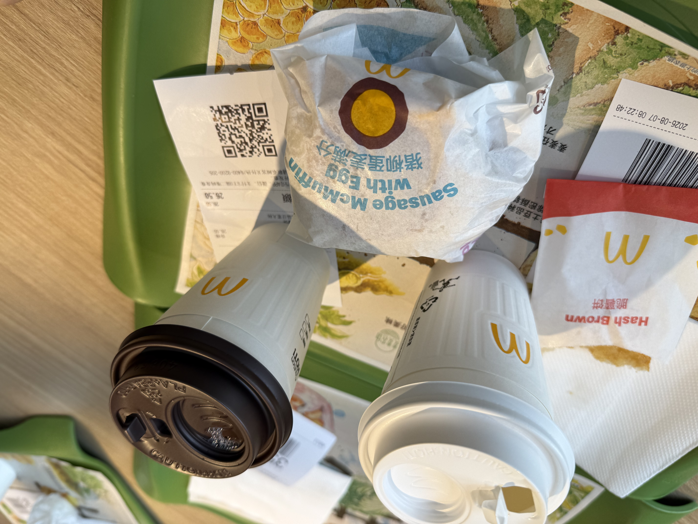
去济南的途中，路过临沂，刚好下高速试试临沂炒鸡，小红书找了家，向民炒鸡味道不错，只吃了一半不到，量有点大，可能是我两胃太小了。
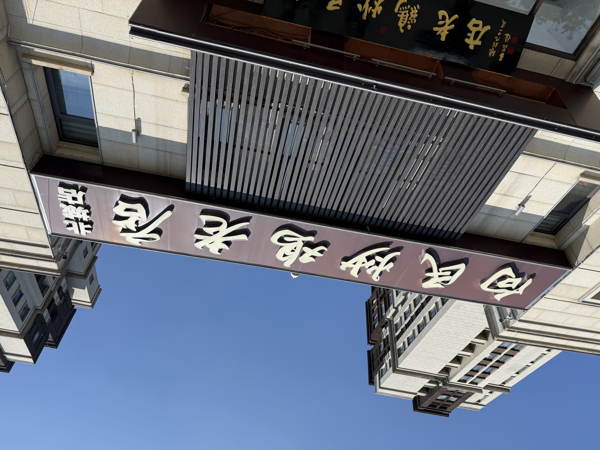
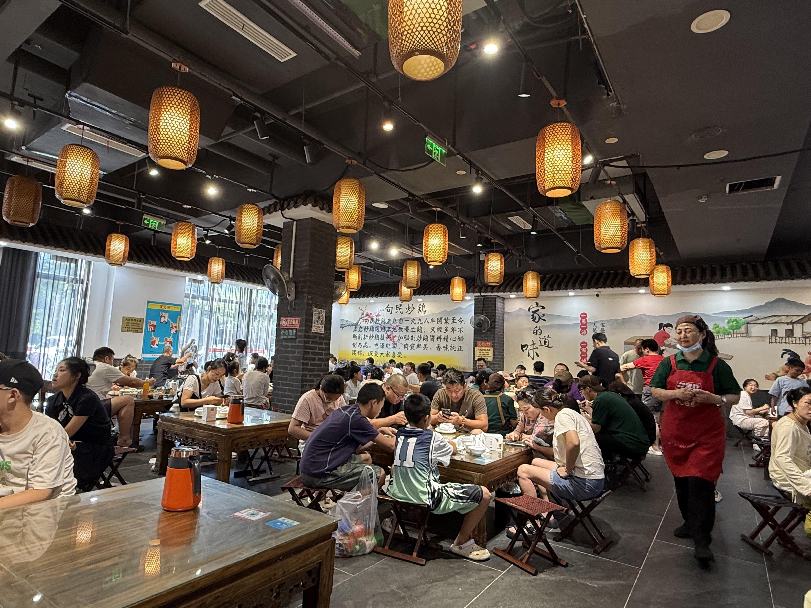
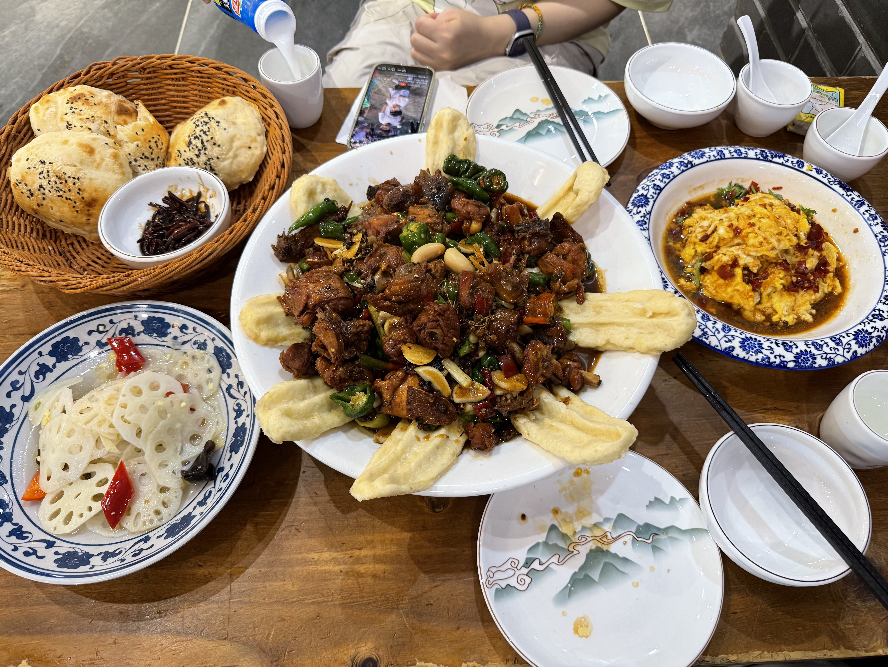
昨天在南京popmart买的拆开看看。
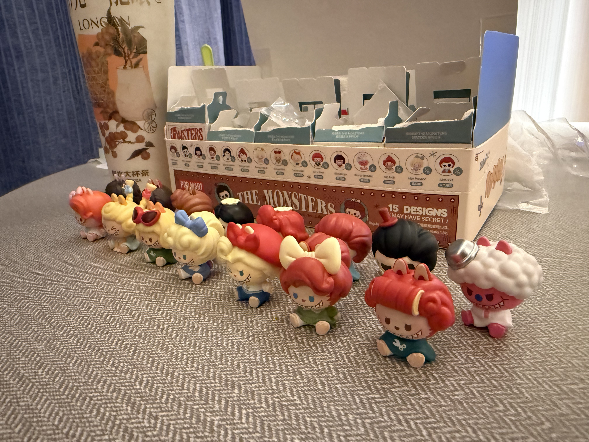
济南的第一站，五龙潭公园，夜游，最后22点闭园离开了，十分满意。
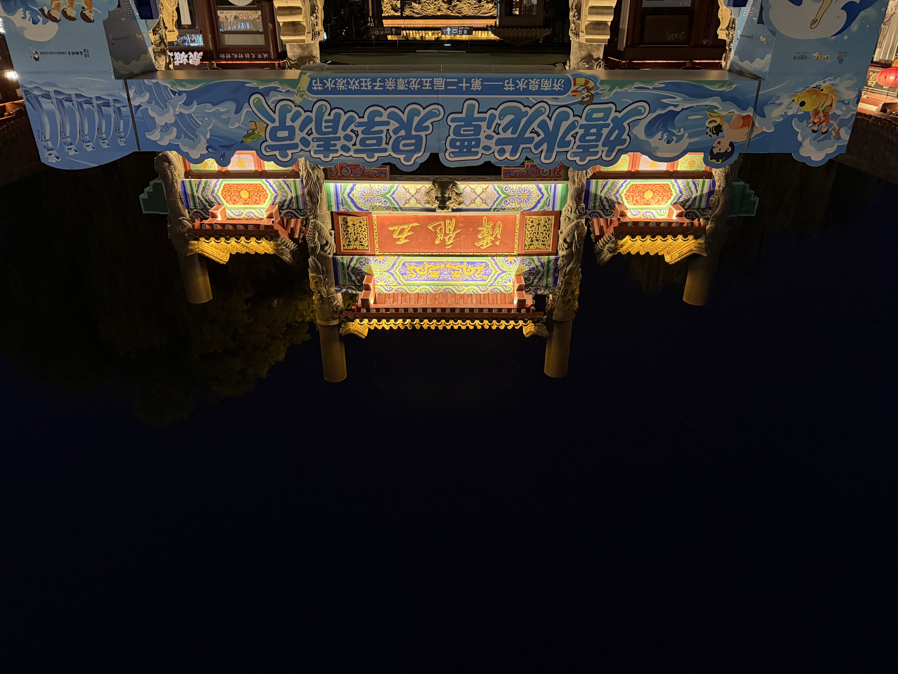
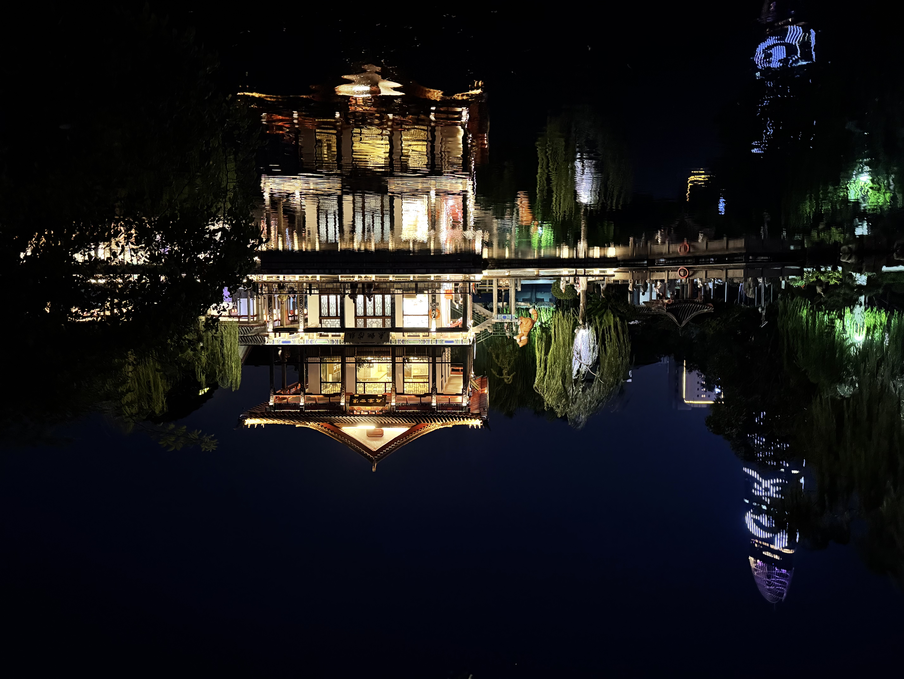
第二站，黑虎泉，喝了免费的泉水，这里有免费的泉水供应，附近的居民都骑着电动车来接水吃。
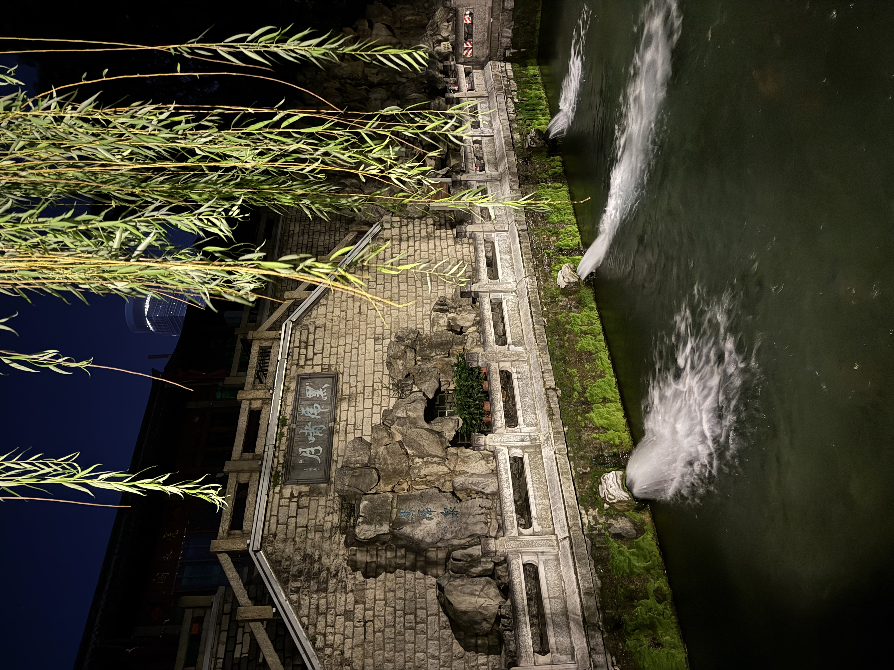
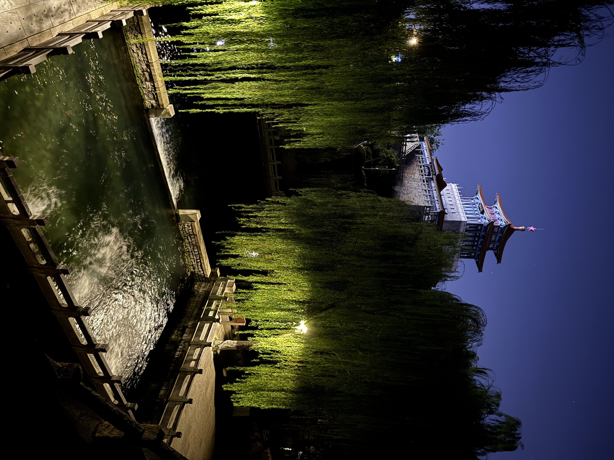
出了黑虎泉，就是宽厚里，挺好逛的，给momo酱买了几个拼图和星星人手机壳，吃了水果捞和臭豆腐，不错。
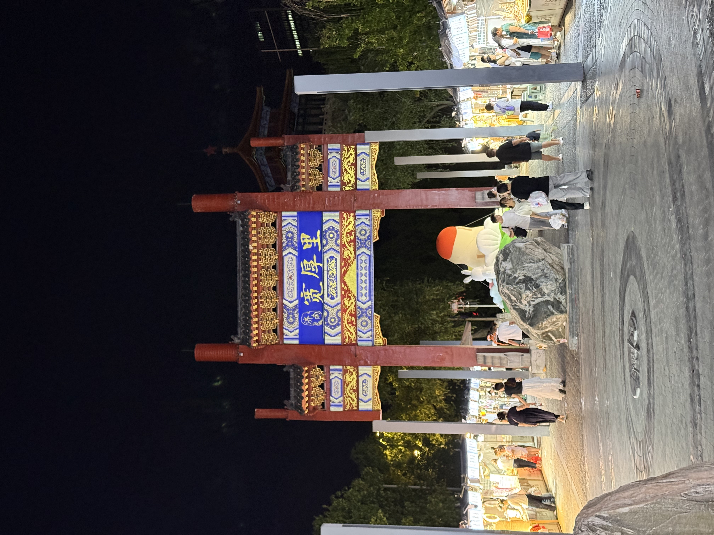
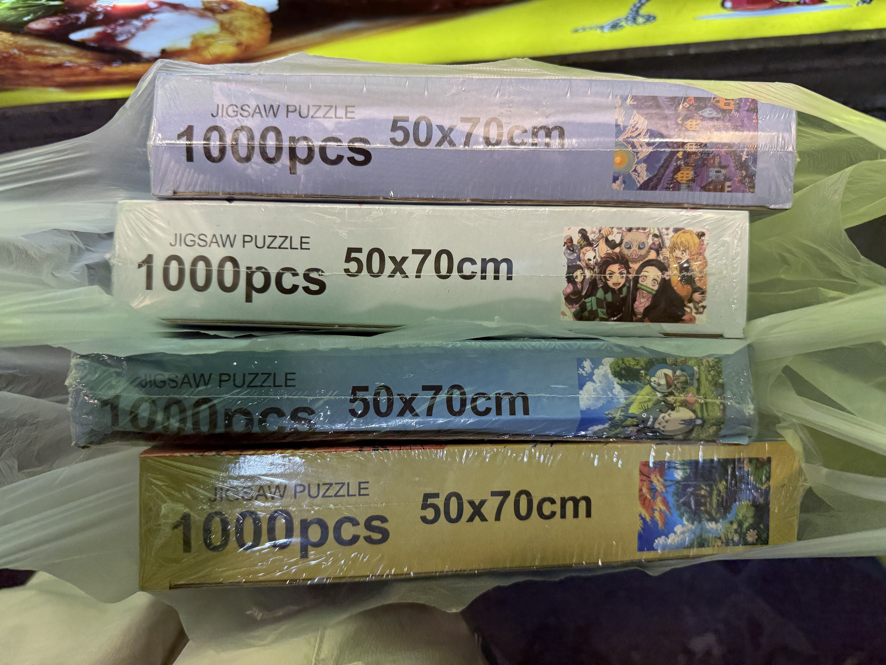
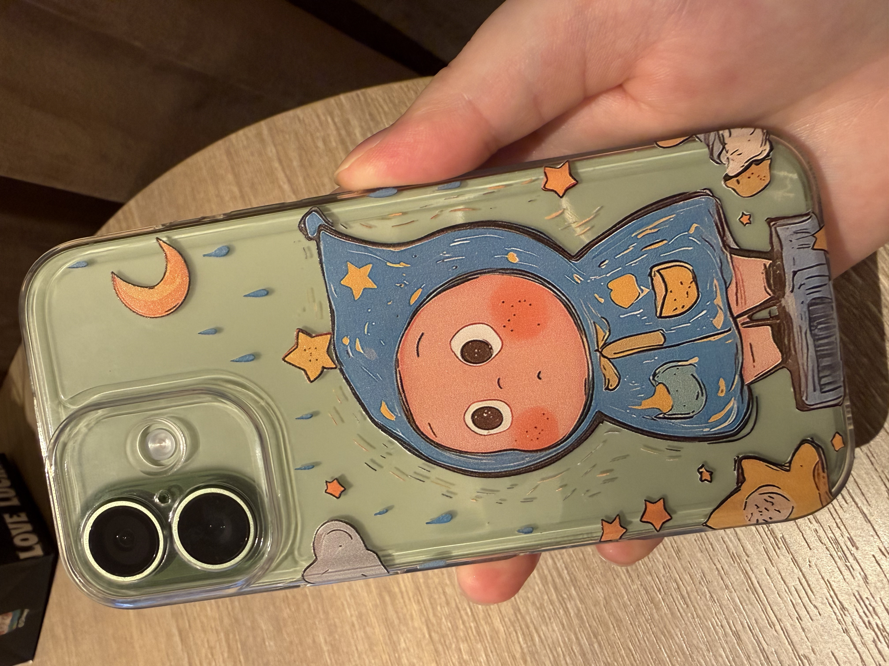
最后又去了千佛山，不过晚上实在看不清，只路过停车场就作罢。白天休息晚上出游的方式体验不错，恰好今天晚上凉风习习，美包包。